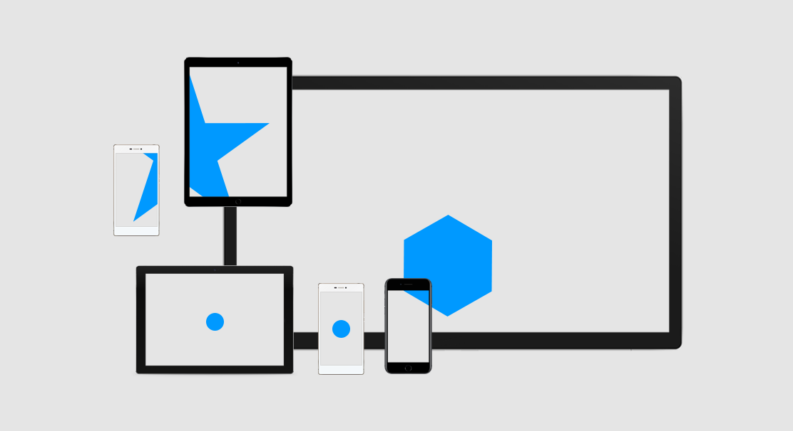

MULTISCREEN PATTERN LIBRARY
Hier steht die ganz super tolle Beschreibung des Projekts. Des Weiteren wird hier eventuell auch erwähnt, dass die Inhalte sowohl für Entwickler als auch Wissenschaftler und Designer gedacht sind. Die Pattern können Ihnen bei der Realisierung von Projekten helfen oder um die Neugierde zu befriedigen. Hier geht es zu den Pattern:
ALLE PATTERN
Hier steht die ganz super tolle Beschreibung des Projekts. Des Weiteren wird hier eventuell auch erwähnt, dass die Inhalte sowohl für Entwickler als auch Wissenschaftler und Designer gedacht sind. Die Pattern können Ihnen bei der Realisierung von Projekten helfen oder um die Neugierde zu befriedigen.
Informiere dich über die Verwendung der Multiscreen Pattern auf einem speziellen Gebiet:
 ENTWICKLER
ENTWICKLER